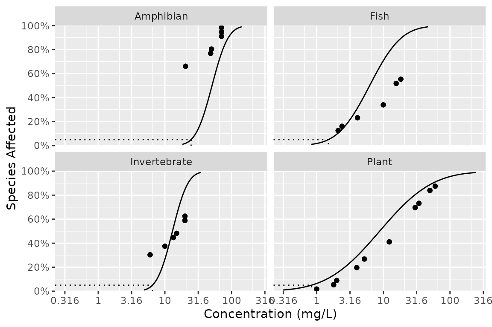

How can I plot the model averaged fit with individual fits?
library(ssddata)
library(ssdtools)
#> Please replace the following in your scripts:
#> - `ssdtools::boron_data` with `ssddata::ccme_boron`
#> - `ssdtools::ccme_data` with `ssddata::ccme_data`
library(tidyverse)
#> ── Attaching packages ─────────────────────────────────────── tidyverse 1.3.1 ──
#> ✔ ggplot2 3.3.6 ✔ purrr 0.3.4
#> ✔ tibble 3.1.7 ✔ dplyr 1.0.9
#> ✔ tidyr 1.2.0 ✔ stringr 1.4.0
#> ✔ readr 2.1.2 ✔ forcats 0.5.1
#> ── Conflicts ────────────────────────────────────────── tidyverse_conflicts() ──
#> ✖ dplyr::filter() masks stats::filter()
#> ✖ dplyr::lag() masks stats::lag()
dist <- ssdtools::ssd_fit_dists(ssddata::ccme_boron)
pred <- predict(dist, ci = FALSE)
ssdtools::ssd_plot_cdf(dist) +
geom_line(data = pred, aes(x = est, y = percent/100))
How do I fit distributions to multiple groups such taxa and/or chemicals?
An elegant approach using some tidyverse packages is demonstrated below.
library(ssddata)
library(ssdtools)
library(tidyverse)
boron_preds <- nest(ccme_boron, data = c(Chemical, Species, Conc, Units)) %>%
mutate(
Fit = map(data, ssd_fit_dists, dists = "lnorm"),
Prediction = map(Fit, predict)
) %>%
unnest(Prediction)The resultant data and predictions can then be plotted as follows.
ssd_plot(ccme_boron, boron_preds, xlab = "Concentration (mg/L)", ci = FALSE) +
facet_wrap(~Group)

ssdtools by the Province of British Columbia is licensed under a Creative Commons Attribution 4.0 International License.